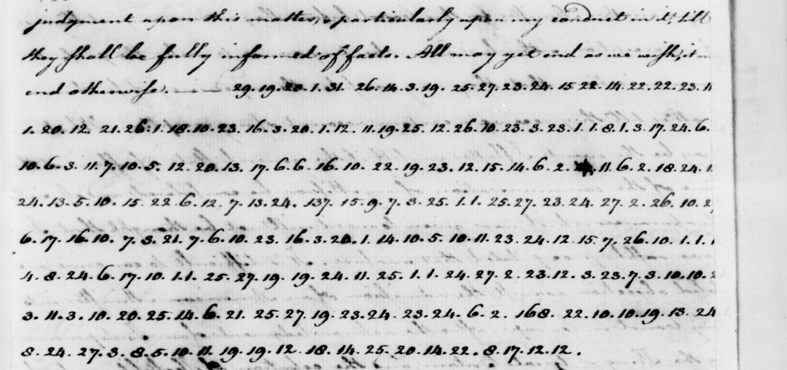
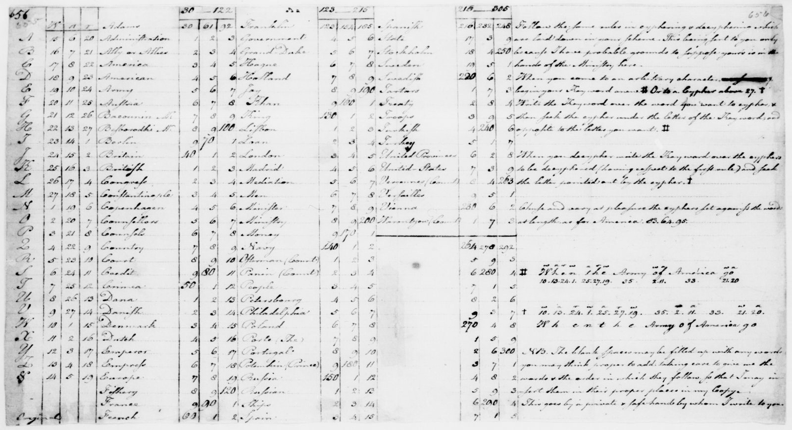

Dossier · Diplomazia della Rivoluzione americana, XVIII secolo
San Pietroburgo, 1783: «qui non c’è un ministro»
Nel 1780 il Congresso degli Stati Uniti manda un avvocato di Boston, Francis Dana, a chiedere a Caterina II di riconoscere la giovane repubblica. Giunge a San Pietroburgo nell’agosto 1781, con un segretario di quattordici anni, John Quincy Adams. L’imperatrice non lo riceve. Nell’aprile 1783, dopo venti mesi di attesa, Dana chiude un dispaccio al Congresso con otto righe di numeri. L’edizione della sua corrispondenza, nel 1889, le sostituisce con una nota: «qui seguono otto righe di cifra».
«In short, properly speaking, there is no Minister here.»
«Insomma, a rigor di termini, qui non c’è un ministro»: Francis Dana a Robert R. Livingston, San Pietroburgo, 6 aprile 1783 (v.s.), passo cifrato.
Cosa c’è di nuovo, cosa era già noto
Noto. La missione di Dana in Russia è ben studiata; il suo dispaccio n. 23 è stampato da Wharton nel 1889, senza la cifra.[2][3] La tavola di cifra che inviò al Congresso nell’ottobre 1782 è nota grazie all’esemplare delle carte di John Adams. Daniel Bourdeau aveva segnalato il passo non decifrato (catalogo n. 485).[4]
Che cosa aggiungiamo, per quanto ci risulta. (1) La prima decifrazione pubblicata delle otto righe (27 ottobre 2026): letta, con 204 gruppi su 213 visibili che si leggono direttamente con la tavola (95,8%), mentre gli altri sono imposti ciascuno da un unico valore. (2) La tavola di Dana ritrovata nello stesso volume degli archivi del Congresso, p. 656, con le sue regole. Lo stesso giorno WAINUT ha ritrovato in modo indipendente la chiave a partire dal solo testo cifrato; è la tavola d’epoca che ci ha dato le parole codificate (Administration, Minister).
Una missione senza udienza
Il Congresso nomina Dana ministro presso l’imperatrice il 19 dicembre 1780. Deve far entrare gli Stati Uniti nella Lega della neutralità armata, che Caterina II ha promosso nel 1780 contro i sequestri britannici in mare, e proporre un trattato di commercio.[3] Ma Caterina vuole porsi come mediatrice tra la Gran Bretagna e i suoi avversari: ricevere l’inviato di una repubblica in guerra con Londra significherebbe prendere posizione. Dana attende, senza carattere ufficiale, parlando male il francese della corte; è il giovane Adams a tradurre.
Dopo i preliminari di pace di Parigi, Dana notifica finalmente la sua missione con una lettera al vicecancelliere, il conte Ostermann, il 24 febbraio / 7 marzo 1783. Nessuna risposta. Il 6 aprile (17 aprile del calendario gregoriano) scrive al segretario agli Affari esteri, Robert R. Livingston, e chiede al Congresso di sospendere il giudizio: «tutto può ancora finire come desideriamo; può finire altrimenti». Poi passa alla cifra.

Che cosa dice la cifra
«In un’amministrazione come questa, che non è guidata da alcun principio né sistema stabilito, non si può essere sicuri di alcuna misura. Ciò che il ministro adotta in quest’ora può essere contrastato nella successiva da un’influenza irresistibile. Insomma, a rigor di termini, qui non c’è un ministro. Di qui il mio attuale imbarazzo.»
Dana non prende di mira una persona. La politica estera russa non ha più un responsabile unico: Nikita Panin, l’uomo della neutralità armata, è stato messo da parte nel 1781; Ostermann firma, ma l’imperatrice decide con i suoi intimi, Bezborodko e il principe Potëmkin. Il poscritto, in chiaro, annuncia proprio la morte di Panin, «la cui morte non cambia nulla», poiché viveva ritirato. Nello stesso mese Caterina annette la Crimea.
Il seguito dà ragione alla diagnosi. Ostermann risponde che l’imperatrice non può ricevere un ministro degli Stati Uniti prima della pace definitiva. Dana lascia la Russia alla fine di agosto 1783 senza essere stato ricevuto; il trattato di Parigi è firmato il 3 settembre.[3] Al Congresso il dispaccio è letto l’8 agosto; Madison scrive che le lettere di Dana sono «in parte non decifrate».[4] Il passo più franco della missione era rimasto illeggibile per i suoi destinatari.
La cifra di Dana

- Tre alfabeti sfasati di 27 segni (a–z e &), usati a turno: una parola chiave di tre lettere.
- Un nomenclatore di parole e nomi numerati da 30 a 305, tre numeri per parola (Administration, Minister, Osterman, Panin, Potemkin…).
- Una regola: dopo ogni numero superiore a 27 si ricomincia la parola chiave.
Dana aveva fatto una tavola propria perché credeva che la cifra del Congresso fosse «nelle mani del ministero di qui». La inviò tramite John Quincy Adams, che lasciò San Pietroburgo nell’ottobre 1782.
Come l’abbiamo letta
- Trascrizione delle otto righe sull’immagine della NARA.
- Una forzatura alla cieca: cifra polialfabetica di periodo 3 su 27 segni, sfasamenti ritrovati con la statistica delle frequenze e dei tetragrammi inglesi.
- Una convalida indipendente: la tavola di Dana, trovata in seguito sfogliando il volume, coincide con i tre sfasamenti della forzatura; applicata così com’è, riproduce anche l’esempio che essa stessa riporta («When the Army of America go»). Punteggio in tetragrammi inglesi della lettura: −1,87 per lettera, contro valori da −9,03 a −6,97 per 200 chiavi di controllo.
- La lettura, gruppo per gruppo: 201 lettere dirette, 3 parole del nomenclatore, 4 errori di Dana corretti e indicati, 7 gruppi sotto la legatura ricostruiti, ciascuno con un unico valore possibile.
Che cosa resta incerto
- Un passo breve: 213 gruppi visibili, poco più di cinquanta parole.
- Il primo numero (29) non esiste nella tavola; l’unica lettura possibile è «I» («In an Administration»).
- Una sola copia: il triplicato; l’originale e il duplicato non sono stati cercati.
- Anteriorità. Verificata il 27 ottobre e poi il 14 novembre 2026: Wharton (1889), Cresson (1930), Adams Papers (solo la tavola), Google Books, repository di Daniel Bourdeau (obiettivo dana1783: forzatura di WAINUT e nostra lettura, 27 ottobre 2026), ricerca in rete. R. E. Weber, United States Diplomatic Codes and Ciphers (1979), non è stato consultato.
Riferimenti
Washington, National Archives, RG 360, Papers of the Continental Congress, item 89, vol. II, pp. 727–730 (dispaccio n. 23, triplicato) e p. 656 (tavola di Dana); microfilm M247. Catalogo NARA ↗
F. Wharton (a cura di), The Revolutionary Diplomatic Correspondence of the United States, vol. VI, Washington, 1889, pp. 381–383. Internet Archive ↗
«Francis Dana», Wikipedia (en), consultato il 14 novembre 2026. Wikipedia ↗
Daniel Bourdeau, catalogo cyphersolver, n. 485, e obiettivo dana1783 ↗: forzatura della chiave a partire dal testo cifrato da parte di WAINUT e lettura di Brice Dudout (27 ottobre 2026); nota dei Papers of James Madison segnalata da Daniel Bourdeau.
Trascrizione, forzatura e lettura: Brice Dudout con Claude, ottobre 2026; tabella gruppo per gruppo nella scheda «Dana 1783» della pagina Documenti, con i crediti.